Visual companion to the three-pillar Compendium — descriptive evidence only, no composite scores. Every figure is reproducible from data/dl_questions_raw.csv and data/extracted/extracted.jsonl.
Which departments, policy domains, places and subjects receive the most attention.
Department attention
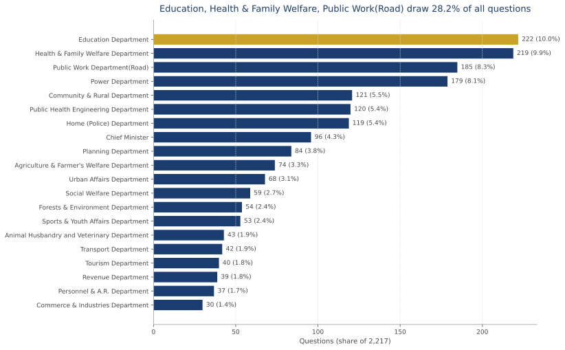
Questions per department with share of the corpus. Source: stats.json.
Attention matrix
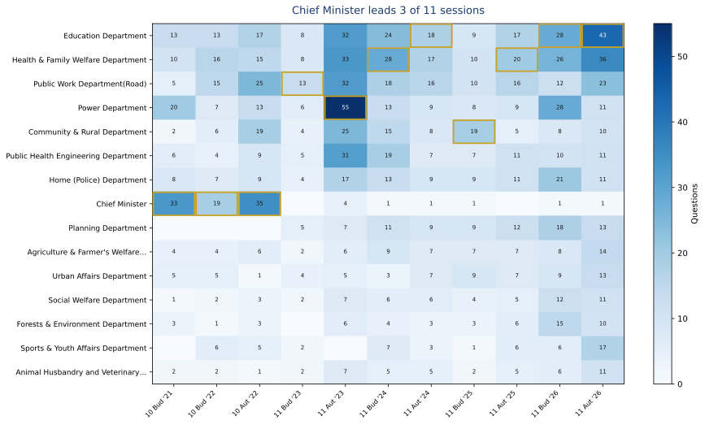
Question counts for the top-15 departments across all 11 sessions. Source: CSV.
Thematic attention
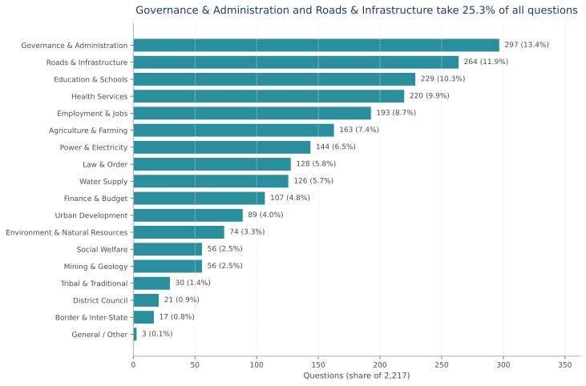
Rule-based thematic coding (Layer 1); every row records its evidence. Source: layer1_themes.json.
Theme × department
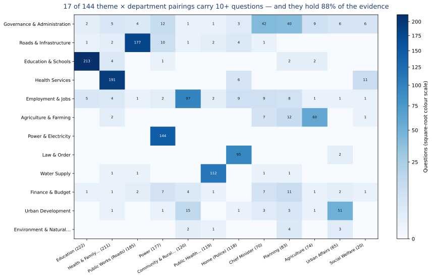
76 of 144 cells hold at least one question; 17 hold 10 or more and carry 88% of the 1,464 questions in the matrix; the top 10 pairings alone hold 81%. The distribution is long-tailed (median cell 1, largest 213), so colour uses a square-root scale while every cell prints its exact count. Largest single pairing: Education & Schools × Education (213). Column totals in brackets. Source: layer1_themes.json.
Geographic attention
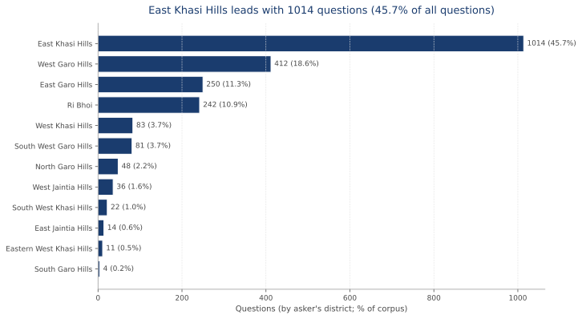
Bar substitute for a choropleth (no boundary shapefile in repo); identical counts. Source: layer2_geography.json.
Mentioned geography
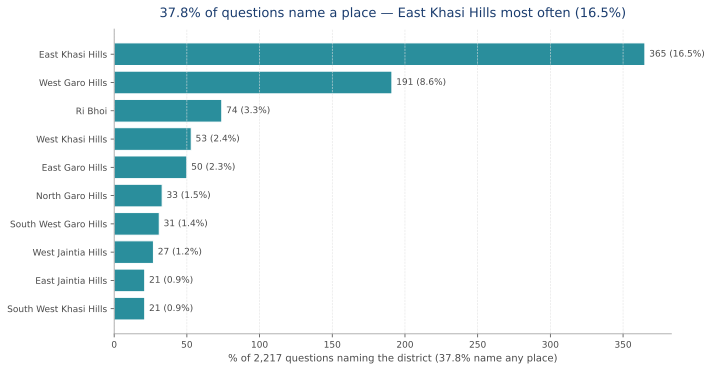
What the text names (gazetteer scan) — complements MLA-seat geography. Source: layer2_geography.json.
Scrutiny vs resources
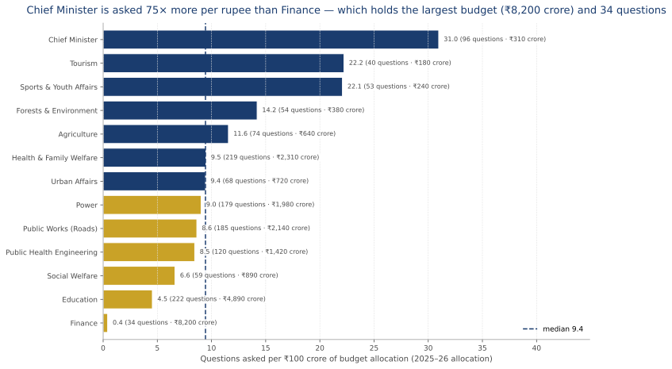
Rate = questions (2021–2026) ÷ budget allocation (2025–26), ×100; 13 departments with at least 5 questions; median 9.4 questions per ₹100 crore. Navy = at or above the median, gold = below; sign is also carried by bar length and by the printed value, never by colour alone. Every bar shows its rate and both inputs. Limitation: one budget year against a five-year question count, so this compares *levels*, not trends. Sources: DEPT_BUDGET, CSV.
Sustained attention
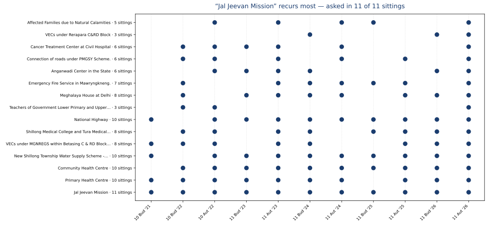
Each dot = the subject was asked in that session (exact normalized match). Source: layer5_resolution.json.
Asker activity
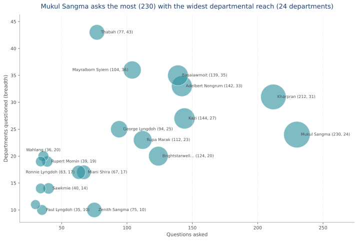
Each bubble = one of the 20 most active members; size = questions. Labels: the 5 most active and 3 broadest first, then every other bubble whose label fits clear of both the other labels and the marks (17 labelled). Members are named by the shortest form that identifies one of them: 9 surnames are carried by more than one member. Source: stats.json.
Policy domains
Theme
Questions
Share
Governance & Administration
297
13.4%
Roads & Infrastructure
264
11.9%
Education & Schools
229
10.3%
Health Services
220
9.9%
Employment & Jobs
193
8.7%
Agriculture & Farming
163
7.4%
Power & Electricity
144
6.5%
Law & Order
128
5.8%
Water Supply
126
5.7%
Finance & Budget
107
4.8%
Urban Development
89
4.0%
Environment & Natural Resources
74
3.3%
Social Welfare
56
2.5%
Mining & Geology
56
2.5%
Tribal & Traditional
30
1.4%
District Council
21
0.9%
Border & Inter-State
17
0.8%
General / Other
3
0.1%
Geographic attention
Region (asker's seat)
Questions
Share
Khasi Hills
1130
51.0%
Garo Hills
795
35.9%
Ri Bhoi
242
10.9%
Jaintia Hills
50
2.3%
District (asker's seat, top 10)
Questions
Share
East Khasi Hills
1014
45.7%
West Garo Hills
412
18.6%
East Garo Hills
250
11.3%
Ri Bhoi
242
10.9%
West Khasi Hills
83
3.7%
South West Garo Hills
81
3.7%
North Garo Hills
48
2.2%
West Jaintia Hills
36
1.6%
South West Khasi Hills
22
1.0%
East Jaintia Hills
14
0.6%
District named in question text (top 10)
Questions
Share of all questions
East Khasi Hills
365
16.5%
West Garo Hills
191
8.6%
Ri Bhoi
74
3.3%
West Khasi Hills
53
2.4%
East Garo Hills
50
2.3%
North Garo Hills
33
1.5%
South West Garo Hills
31
1.4%
West Jaintia Hills
27
1.2%
East Jaintia Hills
21
0.9%
South West Khasi Hills
21
0.9%
37.8% of questions name any place; the rest are state-wide in wording. MLA-seat geography and text mentions are two views of the same corpus — neither replaces the other.
Pillar 2 — Dynamics and Quality of Oversight
What is demanded, how attention moves over time, and how departments respond.
Demand types
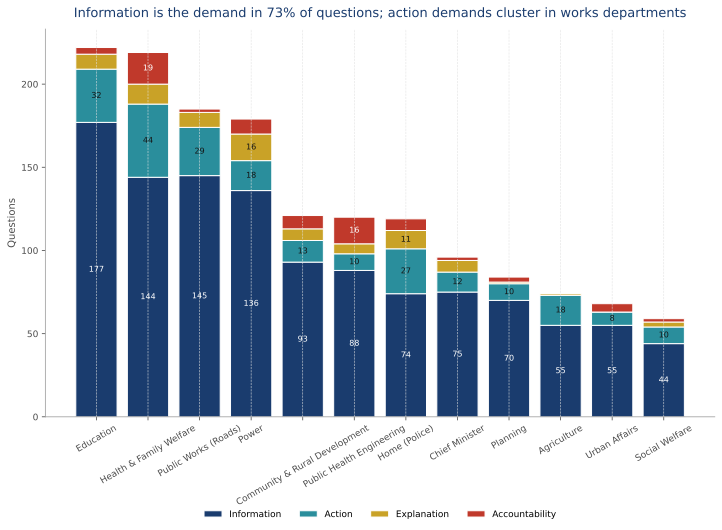
What each question demands: data, reasons, action, or follow-up. Segments >= 8% of a column are labelled. Source: layer3_demands.json.
Volume trend
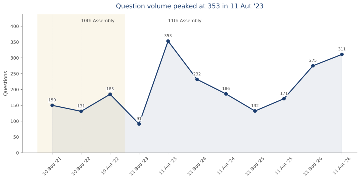
Session-level question volume with the assembly transition shaded; all 11 points labelled. Source: stats.json.
Attention shifts
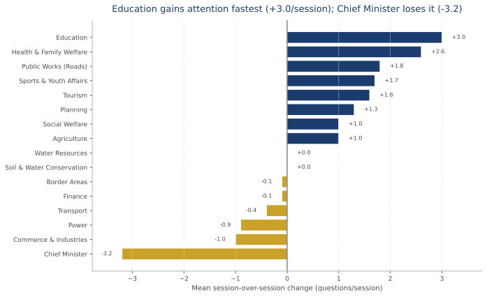
Mean per-session change in question volume. Source: layer6_trends.json.
Question types
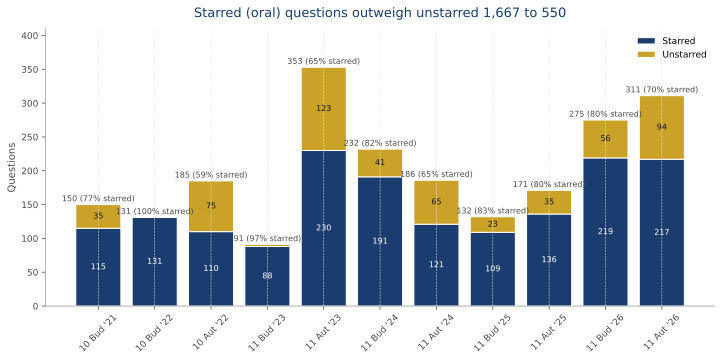
Starred (oral) vs Unstarred (written) mix per session; every column labelled with its total and starred share, and segments >= 8% of a column labelled inside. Source: CSV Category field.
Opposition intensity
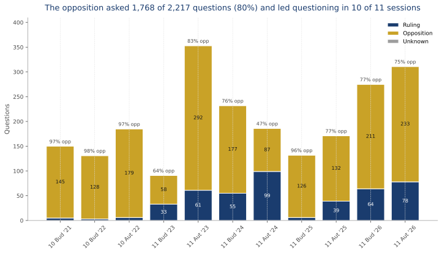
Asker bloc from MLA party records; counts only, no effectiveness claims. Segments >= 8% of a column are labelled; the opposition share sits above each column. Source: layer3_demands.json.
Reply coverage
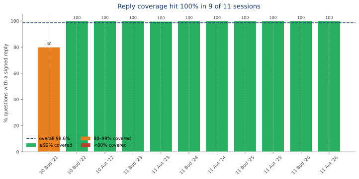
Whether a signed reply PDF exists per session; every bar labelled. Source: stats.json.
Response quality
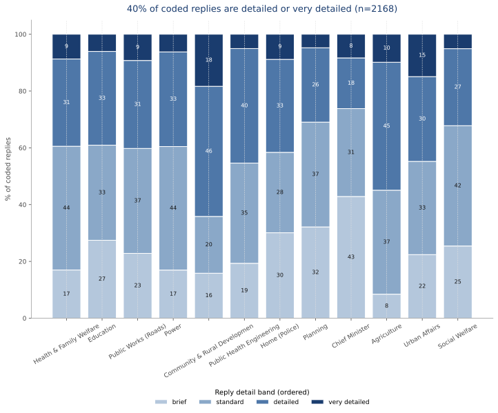
Length bands over 2168 OCR-coded replies; regenerates as extraction accrues. Segments >= 8% of a column are labelled; smaller bands are left to the axis.
Response signals
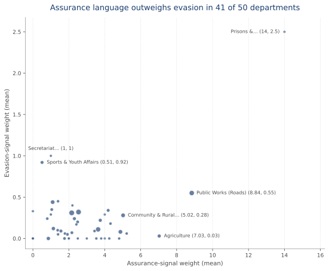
Bubble size = coded replies. Labels: assurance and evasion extremes first, then every department whose label fits clear of both the other labels and the marks (6 of 50 labelled; the remaining departments sit inside one dense cluster). Ported signal registries; weights, not scores.
Execution stages
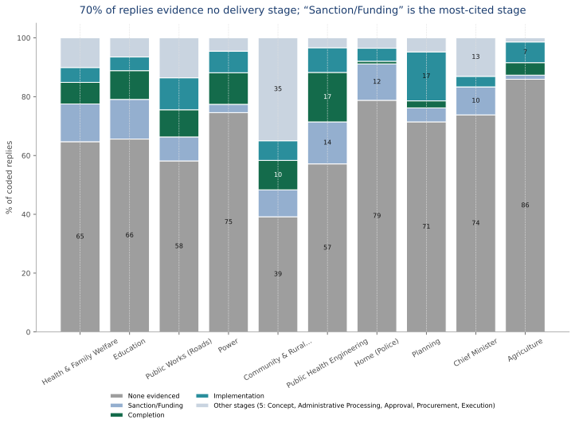
Highest evidenced lifecycle stage per reply (negation-aware). n=2168 coded replies. Segments >= 8% of a column are labelled; smaller bands are left to the axis.
Reply latency
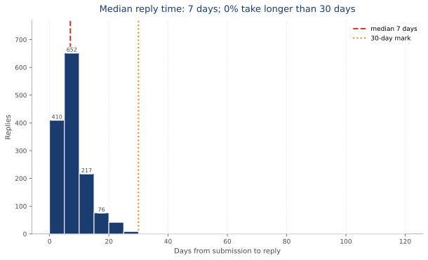
Trustworthy date pairs only; flagged pairs excluded but kept in data. Bins holding >= 10% of the tallest bin are labelled.
Demand mix
Demand type
Questions
Share
Information
1629
73.5%
Action
366
16.5%
Explanation
118
5.3%
Accountability
104
4.7%
Who asks: opposition share by session
Session
Ruling
Opposition
Unknown
Opposition share
Tenth Budget Session, 2021
5
145
0
96.7%
Tenth Budget Session, 2022
3
128
0
97.7%
Tenth Autumn Session, 2022
6
179
0
96.8%
Eleventh Budget Session, 2023
33
58
0
63.7%
Eleventh Autumn Session, 2023
61
292
0
82.7%
Eleventh Budget Session, 2024
55
177
0
76.3%
Eleventh Autumn Session, 2024
99
87
0
46.8%
Eleventh Budget Session, 2025
6
126
0
95.5%
Eleventh Autumn Session, 2025
39
132
0
77.2%
Eleventh Budget Session, 2026
64
211
0
76.7%
Eleventh Autumn Session, 2026
78
233
0
74.9%
Scrutiny vs budget (2025–26 allocations vs 2021–26 questions)
Department
Questions
Budget (₹ cr)
Questions per ₹100 cr
Finance
34
8,200
0.4
Education
222
4,890
4.5
Health & Family Welfare
219
2,310
9.5
Public Works (Roads)
185
2,140
8.6
Power
179
1,980
9.0
Public Health Engineering
120
1,420
8.5
Social Welfare
59
890
6.6
Urban Affairs
68
720
9.4
Agriculture
74
640
11.6
Forests & Environment
54
380
14.2
Chief Minister
96
310
31.0
Sports & Youth Affairs
53
240
22.1
Mining and Geology
0
220
0.0
Information Technology
0
190
0.0
Tourism
40
180
22.2
Pillar 3 — Persistent and Emerging Challenges
What recurs, what is stalled, and what is emerging.
Resolution tracking
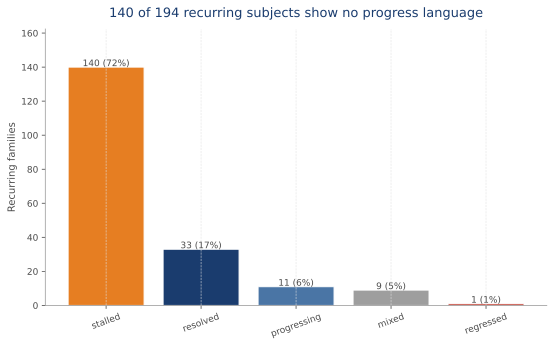
Bar until replies resolve trajectories; a Sankey follows once resolved/progressing/stalled split. Source: layer5_resolution.json.
Emerging issues
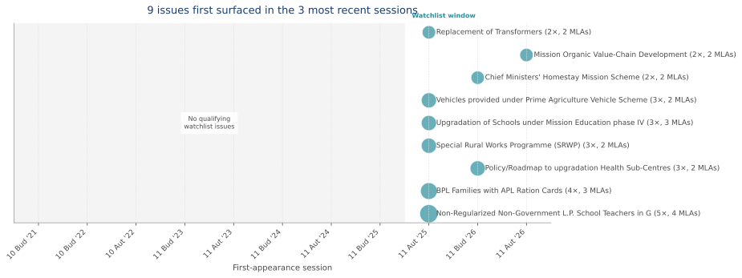
First seen in the last 3 sessions, ≥2 occurrences, ≥2 askers. Source: layer6_trends.json.
Emerging issues watchlist
Subject
First seen
Occurrences
Askers
Departments
Mission Education
Eleventh Autumn Session, 2026
2
2
Education Department
Ration Card
Eleventh Autumn Session, 2025
2
2
Food Civil Supplies & Consumers Affairs Department
Replacement of Transformers
Eleventh Autumn Session, 2025
2
2
Power Department
Revamped Distribution Sector Scheme
Eleventh Budget Session, 2026
2
2
Power Department
Tourism Infrastructure Projects
Eleventh Autumn Session, 2026
2
2
Tourism Department
Villages without Electricity
Eleventh Budget Session, 2026
2
2
Power Department
Stalled issues (recurring, no progress language in latest reply)
None coded as stalled yet — trajectories resolve as OCR replies accrue.
Anticipate & prepare by department
Likely next-session questions and evidence-linked preparation steps. Full briefs for all departments: output/anticipation/dept_briefs.json.
The gap is a profile, not a score: seven separately-reported dimensions per department. Wider bars = further from answer-ready. Red marks the worst value per row.
Health & Family Welfare 218 coded replies
Unanswered demand0%
Boilerplate replies1.8%
Contradictory replies6.4%
Thin-evidence replies11.9%
Replies without timeline98.6%
Replies without budget85.3%
Median latency6.0 days
Education 215 coded replies
Unanswered demand0.5%
Boilerplate replies1.4%
Contradictory replies6.0%
Thin-evidence replies22.8%
Replies without timeline97.7%
Replies without budget87.9%
Median latency6.0 days
Public Works (Roads) 184 coded replies
Unanswered demand0%
Boilerplate replies1.1%
Contradictory replies8.2%
Thin-evidence replies31.0%
Replies without timeline98.4%
Replies without budget83.2%
Median latency5.0 days
Power 177 coded replies
Unanswered demand1.1%
Boilerplate replies1.1%
Contradictory replies4.0%
Thin-evidence replies18.1%
Replies without timeline98.3%
Replies without budget72.9%
Median latency7.0 days
Community & Rural Development 120 coded replies
Unanswered demand0%
Boilerplate replies0%
Contradictory replies10.0%
Thin-evidence replies11.7%
Replies without timeline97.5%
Replies without budget71.7%
Median latency8 days
Public Health Engineering 119 coded replies
Unanswered demand0.8%
Boilerplate replies0%
Contradictory replies9.2%
Thin-evidence replies10.1%
Replies without timeline95.8%
Replies without budget89.1%
Median latency11.0 days
Home (Police) 113 coded replies
Unanswered demand2.5%
Boilerplate replies0.9%
Contradictory replies4.4%
Thin-evidence replies10.6%
Replies without timeline97.3%
Replies without budget88.5%
Median latency7 days
Planning 84 coded replies
Unanswered demand0%
Boilerplate replies0%
Contradictory replies0%
Thin-evidence replies15.5%
Replies without timeline98.8%
Replies without budget88.1%
Median latency10 days
Chief Minister 84 coded replies
Unanswered demand9.4%
Boilerplate replies0%
Contradictory replies4.8%
Thin-evidence replies26.2%
Replies without timeline97.6%
Replies without budget82.1%
Median latency9.0 days
Agriculture 71 coded replies
Unanswered demand2.7%
Boilerplate replies0%
Contradictory replies4.2%
Thin-evidence replies0%
Replies without timeline100.0%
Replies without budget77.5%
Median latency12 days
Methods & limitations
Reproducibility. Thematic coding is keyword rules with department-sector tie-breaks (evidence per row); geography is MLA lookup plus a gazetteer scan; demand types are Information / Explanation / Action / Accountability; response quality is four separately-reported dimensions from ported regex registries; recurrence is exact normalized match across sessions (under-merges paraphrases, never over-merges).
Known limits. OCR accuracy is bounded (~0.94/field); flagged date pairs are excluded from timeliness but kept in the data. MLA-based geography assumes questions concern the asker's own seat. regenerate everything with python scripts/run_layers.py && python scripts/build_compendium.py && python scripts/build_charts.py && python scripts/build_dashboard.py && python scripts/build_report.py.